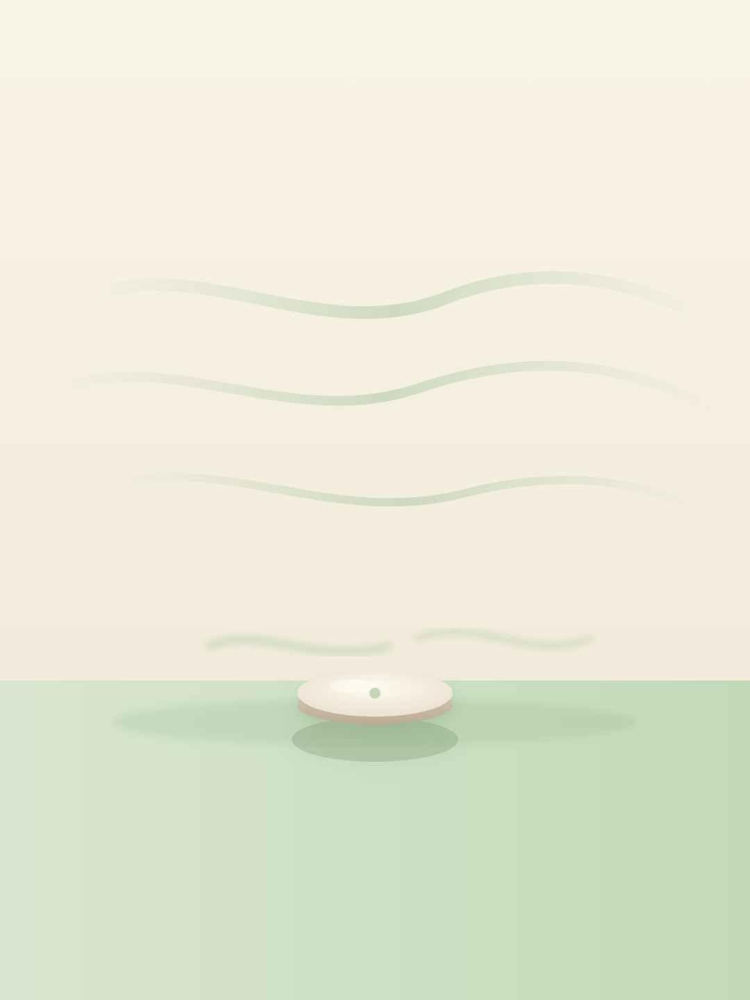
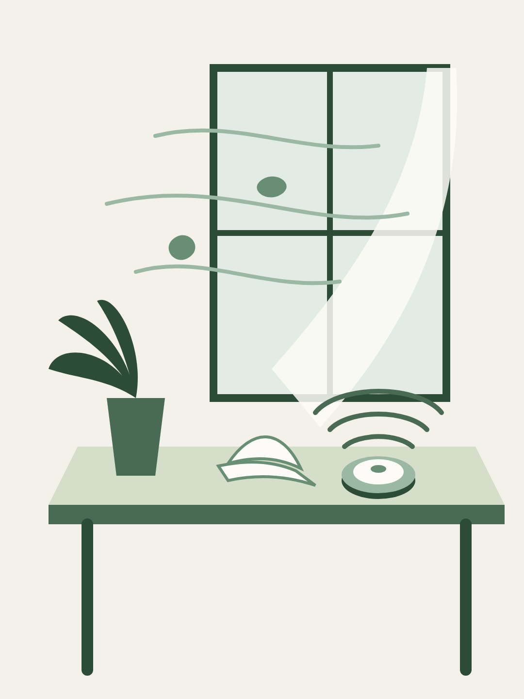
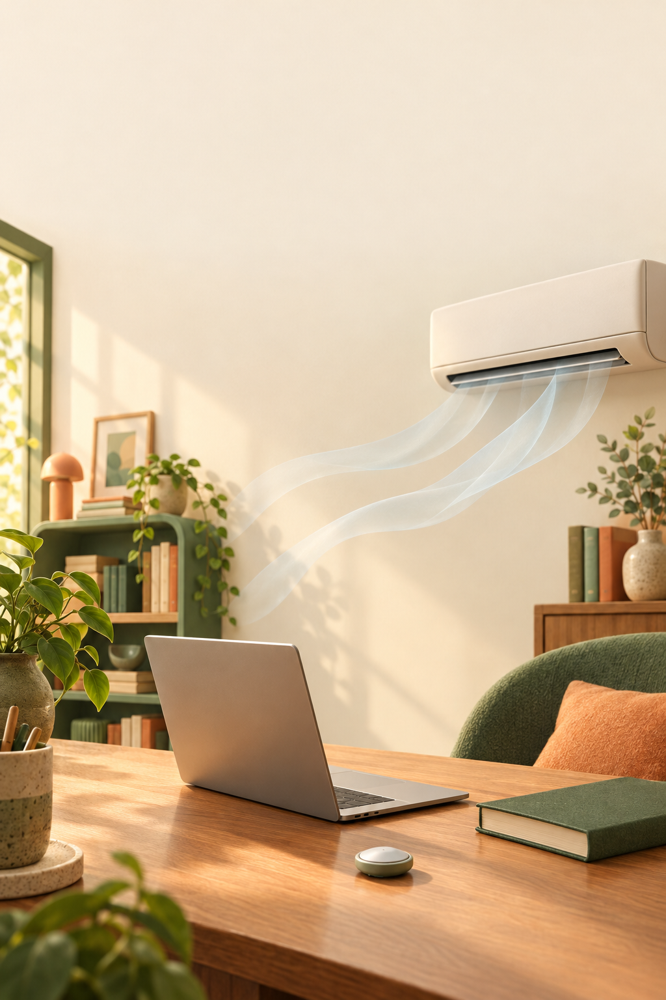

内容链路
原始文章 → HTML/CSS/SVG 排版 → Playwright 截图 → 人工检查 → 用户在官方平台手动发布。
长按 = 打开空调，不是 toggle；24℃只作示意，99%是原文修辞。
TIA-457 · XHS STUDY SWITCH
把一篇真实的智能家居生活记录，拆成三套真正不同的 3:4 小红书研究样张。这里展示的是离线制图与研究证据，不是已发布内容。
原始文章 → HTML/CSS/SVG 排版 → Playwright 截图 → 人工检查 → 用户在官方平台手动发布。
长按 = 打开空调，不是 toggle；24℃只作示意，99%是原文修辞。
离线生成原创 PNG，人工检查事实、素材与 AI 标识，再由用户在官方创作者平台完成操作。没有登录、上传、保存草稿或发布。
不采集 Cookie，不开远程调试，不绕过验证码，不做签名/API 规避。Bridge/Playwright 草稿流仅是未来在获授权后评估的条件选项。
/v1/models：HTTP 200。gpt-image-2.5-flare 出现在 models，但 responses HTTP 400 model_not_supported。证据：Goal handoff 的 source-verified research findings 与本地探针摘要（未将私有工作文件路径发布）；公开页仅保留已脱敏结论。证据置信度最高为 MEDIUM，版本与平台条款需独立复核。
--- 可能吞掉内容。≤40% 文字、≤3 行、无首行缩进是编辑/风险控制建议，没有独立官方证据证明是强制规则；没有 safe daily posting guarantee。AI 内容创作不等同于无人值守账号操作。当前推荐人工在官方平台操作并按要求标识 AI 内容。
Genjutsu 是本机 native SwiftUI UI/动效设计 skill，不是 Web 栅格生图模型。离开书房、睡眠与离家关停是原文描述的家庭 cleanup 行为，本页不提供可部署自动化。

同一 1080×1440 Playwright 管线渲染；不是 Style A/B/C 正式卡片。

bounded SVG iteration，20.5s；初始长响应截断另行记录。

Style B 使用的通用原创 AI 背景；发布前按平台要求完成 AI 内容标识。
当前推荐手动使用官方创作者平台。研究发现对第三方工具的判断来自固定版本的公开源码静态检查，不能等同于 live draft 成功或平台授权。任何未来半自动 Bridge 流程都应使用专用受保护 profile、获得明确授权、人工复核草稿内容后再决定；保存草稿不自动证明合规。AI 生成背景应按适用规定与平台要求主动标识。
Ming-H 的分页器需要正确的 frontmatter 边界；否则前两个 --- 可能吞掉中间内容，不能宣传为可靠的普通 Markdown 自动分页。官方创作者协议入口目前只是前端壳，未将索引片段当作已核实原文。AI 内容创作不等同于无人值守账号操作。
来源：中国政府网·生成合成内容标识办法；Playwright persistent context；以及 research findings 中列出的 pinned GitHub source URLs（访问日 2026-11-15，版本 caveat 见上）。